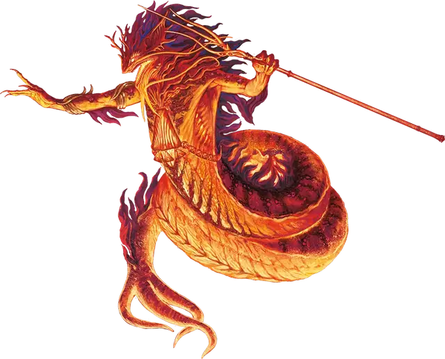

Инфернальная саламандра
Salamander Inferno Master
Большой Элементаль, Нейтральный Злой

Класс Защиты 18 Инициатива +8 (18)
Хиты 256 (27к10 + 108)
Скорость 40 футов, Лазания 40 футов
| мод | спас | ||
|---|---|---|---|
| СИЛ | 24 | +7 | +7 |
| ЛОВ | 16 | +3 | +8 |
| ТЕЛ | 18 | +4 | +4 |
| мод | спас | ||
|---|---|---|---|
| ИНТ | 14 | +2 | +2 |
| МДР | 10 | +0 | +5 |
| ХАР | 20 | +5 | +5 |
Уязвимость к урону Холод
Иммунитеты Огонь
Чувства Тёмное зрение 120 футов, пассивное Восприятие 10
Языки Первичный (Ignan)
Опасность 15 (13 000 опыта; БВ +5)
Особенности
Аура огня. В конце каждого хода саламандры каждое существо (по её выбору) в 10-футовой Эманации, исходящей от саламандры, получает 10 (3к6) урона Огнём.
Сопротивление магии. Саламандра совершает с Преимуществом спасброски от заклинаний и прочих магических эффектов.
Действия
Мультиатака. Саламандра совершает две атаки Пламенным трезубцем.
Пламенный трезубец. Бросок рукопашной или дальнобойной атаки: +12, досягаемость 5 фт. или дистанция 30/90 фт. Попадание: 16 (2к8 + 7) Колющего урона плюс 14 (4к6) урона Огнём. Промах или попадание: Трезубец магическим образом возвращается в руку саламандры сразу после совершения дальнобойной атаки.
Инфернальный взрыв (Перезарядка 5–6). Спасбросок Ловкости: Сл 18, каждое существо в 30-футовой Сфере с центром в видимой саламандрой точке в 120 футах. Провал: 35 (10к6) урона Огнём, и цель начинает гореть, получая 5 (1к10) урона Огнём вместо обычного урона горения в начале каждого своего хода. Цель получает 1 уровень Истощения каждый раз, когда получает урон от этого горения. Успех: Только половина урона.
Бонусные действия
Пылающий рывок. Саламандра перемещается на расстояние вплоть до своей Скорости, не Провоцируя атак. В течение этого перемещения огонь заполняет 5-футовую Эманацию, исходящую от саламандры. Когда Эманация входит в пространство существа, это существо получает 7 (2к6) урона Огнём. Существо может получить этот урон только раз в ход.
Бонус мастерства +5
Среда обитания Подземье, Стихийный план Огня
Сокровища Оружейные
Саламандры
Змееподобные творцы ревущего пламени
Саламандры — это змееподобные обитатели Стихийного плана Огня. Они убеждены, что огонь обнажает самую чистую суть всех вещей, и наслаждаются горением и плавлением, находя мимолётную красоту и удивительные оттенки в том, как пылает разное топливо — древние леса, шедевры искусства или живые существа. Для саламандр те, кто не способен выдержать их жар, — всего лишь пепел, временно притворявшийся чем-то иным. Они редко питают настоящую злобу к кому-либо, но считают создание впечатляющего пламени важнее той боли и потерь, что их огонь приносит.
Обычно саламандры вполне довольны жизнью на Стихийном плане Огня, где среди сполохов пламени творят причудливые недолговечные шедевры. Некоторые, впрочем, путешествуют по иным планам и мирам, чтобы испытать тамошнее пламя или устроить пожары невиданного прежде размаха.
Инфернальные саламандры — древние ценители пламени, часто обитающие в особо жарких уникальных местах. Они собирают вокруг себя общины учеников, которые постигают огненные техники и помогают наставникам в их великих трудах. Цели у инфернальных саламандр особо амбициозные — например вызвать извержение колоссального вулкана, открыть портал на пылающий план, уничтожить Артефакт или подчистую выжечь что-то из мультивселенной.